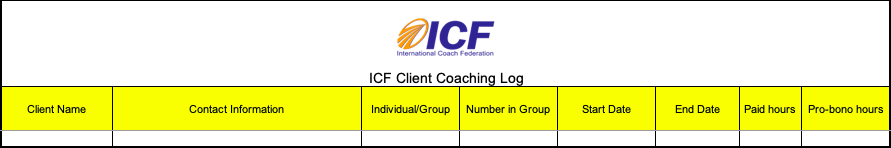
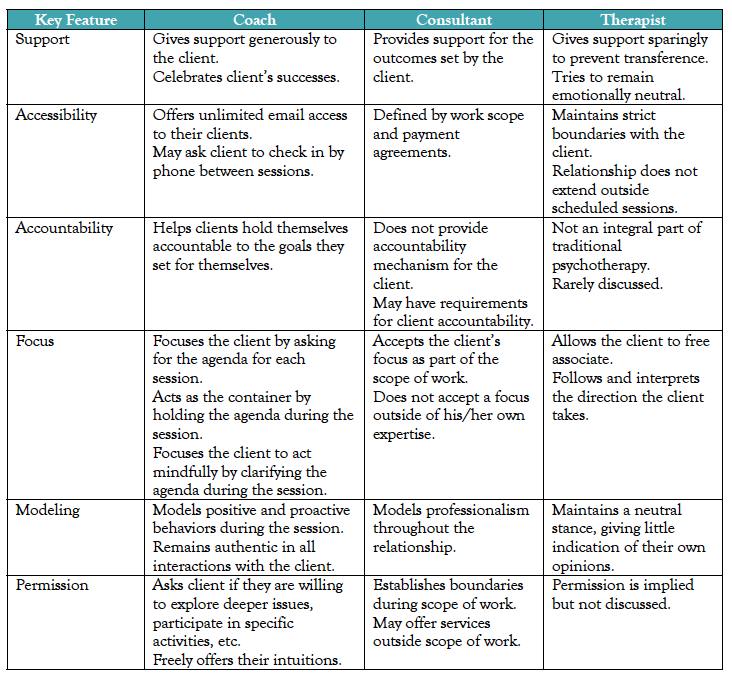

2 Intro
2.1 Definition
Irene Nizzero, MCP 236, February 26, 2020 @ 4 PM - 5:30 PM
The International Coach Federation (ICF) defines coaching as “partnering with clients in a thought-provoking and creative process that inspires them to maximize their personal and professional potential.”
Ben Dean, Free Teleseminar, February 20, 2020 @ 5 PM - 7 PM
Other definitions include:
Brief Coaching for Lasting Solutions - “Comfortably bringing important people from where they are to where they want to be.” So focusing on the gap between where somebody is right now and their vision of where they want to be in the future.
“It is a little like having a secret business partner who is totally dedicated to your success but where you get to keep all the profits.”
Irene Nizzero, MCP 236, February 26, 2020 @ 4 PM - 5:30 PM
Partnering is key here and the ICF has ensured that the client is the one driving the process. The coach is the navigator (as the person who is sort of guiding and giving direction) and helping to shape the process by his or her expertise but it is the client who decides where he or she ultimately goes. Coaches honor their clients as the expert in their lives and work, and coaches believe every client is creative, resourceful and whole. We are NOT fixing people or situations. Coaching is about helping people achieve potential. However, solutions are ultimately client generated. Coaches do NOT tell clients “if I were you this is what I would do.”Coaches can describe it to clients as helping clients get out of their own way. Clients usually have a sense of where they want to go but are feeling stuck for a variety of reasons that may be due to their own limiting beliefs or limiting understanding about the circumstances, situation, or themselves. Coaches help clients understand their true potential as compared to what clients have always believed or been ready to accept about their abilities. Coaches also establish accountability.
Irene Nizzero, MCP 236, February 26, 2020 @ 4 PM - 5:30 PM
Coaches can:
- Help clients get unstuck from something holding them back in their lives.
- Provide support and accountability to people seeking change as they take action steps toward the life they want.
- Build awareness of clients’ agency, empower choices, and offer processes and systems that clients can use to effect change in themselves and their life.
- Teach clients how to learn for themselves about how to create a life they want, achieve their goals, achieve peace of mind.
Etymology
Ben Dean, Free Teleseminar, February 20, 2020 @ 5 PM - 7 PM
Mentoring and coaching has been part of the human experience for centuries. In the painting “Calypso receiving Telemachus and Mentor in the Grotto” there is a man named Mentor, who was the loyal friend and advisor of Odysseus and the teacher of his son Telemachus. His name came to mean a wise and loyal advisor, a teacher or a coach.
The word coach (Koch) comes from a small town in Hungary in the 15th century. They made the greatest coaches in the world or wagons.They were so well made that everywhere in the known world they were called coaches, it went on to become Cinderella’s coach, stage coach, and even now coachfare in an airplane. Over centuries additional meanings have been added to that word.At the end of the 20th century, the word coach started being applied to a relationship between a individual consultant known as executive coaching.
2.2 About
Focus
Ben Dean, Free Teleseminar, February 20, 2020 @ 5 PM - 7 PM
Coaching can be focused primarily on reflection or action or more often some combination of the two. Coaching focused on reflection is where the coach asks questions and the client deepens their understand, and reflects on themself. Action based, is where the client does not spend time reflecting on do what they want to do. They already know what they want to accomplish. The coach is helping them achieve their goal.
Motivation
Ben Dean, Free Teleseminar, February 20, 2020 @ 5 PM - 7 PM
People choose to become coaches because they believe that being a transformative mentor in the life of others is a worthy use of their life.
Qualities
Ben Dean, Free Teleseminar, February 20, 2020 @ 5 PM - 7 PM
- Believe in their clients
Empathic listeners
When they listen, they hear the sharps and flats of what people are saying, see the non-verbals, hear what is not said, and do it in a way that makes the speaker feel heard.
- Accepting
Respect their clients
Not all coaches are able to truly respect their clients and their struggles all the time.
Are admirable
The real undergrounding component of being admirable is that you face your own pain and problems. That way when you are working with a client to solve a difficult problem they have been there. When clients admire their coaches, clients are more opent to their influence and allows coaching to be more effective.
Tailor to their clients
One philosophy fits all. It must be driven by the client and who they uniquely are. It is the ability to see complexity and to see if what you are saying and doing with the person is effective; being able to connect with the person and handle ruptures when they occur. Master coaches they have a whole fund of experience that allows them to pick up on subtle differences and to tailor to. It usually won’t be there for us right at the first but over time this is something that is apparent in good coaches and mentors.
- Encouraging
Focused on action & accountability
They know how to work with the client to help them take action. Sometimes clients do not want to be asked deep questions. They just want to get something done and they need your support to do it. Good coaches remember what the client said and will find effective ways to interact, check in, and will respond effectively if the client did or did not meet their goal. Also, there is something about holding the person accountable, which is immensely motivating when clients are trying to do something difficult.
Love
Love is the selfless commitment to the growth of another human being. Coaches aspire to love their clients.
Selflessness
This means that the coach is truly there for the client and their needs. If coaches aren’t careful, they can structure a relationship the coach is doing what is best for them, rather than what is best for the client. The client can sense when their interests are not congruent with the coaches’. It may never even be spoken of, but if the coach picks the client, they know it and it makes a difference. This deepens their trust, makes the client more open to the influence of the coach, and makes the coaching more effective.
Theories of Change : if coaches want to help people take action and make change and movement they must have a theory of how change occurs. There are a number of theories, but coaches need at least one that makes sense to them and that helps them frame, in their mind, where the client is in the change process and what will likely help them move to the next step of the process.
Procrastination : when coaching people who have ambitious goals, those goals are scary and makes them anxious, leading them to procrastinate put it off, or not make it a primary focus. Clients may not even understand why they are procrastining. Coaches should not view this procrastination in a psychotherapeutic way and call it resistance, rather they should understand that it is ambivalence. Everyone is ambivalent about taking action in some important area of your life. It is true for all of us and that will be inevitable for clients.When that happens coaches need to be an artist at dealing with that ambivalence. Coaches need to have a number of ways to think about it, deal with it, and not to be boxed in by it.
Certification
Irene Nizzero, MCP 236, March 11, 2020 @ 4 PM - 5:30 PM
ACC candidates are required to document at least 100 hours (75 paid) of coaching experience with at least eight clients following the start of your coach-specific training*. At least 25 of these hours must occur within the 18 months prior to submitting the application for the credential. ICF has a log to start tracking hours when you start getting clients, paid hours in particular. Even if they are paying you a dollar, that counts as a paid hour. You can also barter services. Pro bono hours need to be recorded as pro bono.
A client coaching hour is 60 minutes of actual coaching with a client who has hired the applicant as a coach and not in any other capacity. (Mentor coaching or coaching supervision is not accepted as a client coaching hour.) Coaching must be done in person or by telephone or other voice-to-voice technology.
- Paid Hours include:
- Hours of coaching for which the coach receives payment from the client (payment may be in any amount, or barter of goods or services, including coaching in exchange for coaching)
- Peer to peer coaching (outside of training program) can be claimed as paid or bartered coaching. Peer to peer coaching (within Reciprocal Peer Coaching) can be claimed as paid hours.
- Pro Bono Hours include:
- Volunteer/donation Coaching
- Group Coaching Sessions:
- To qualify as group coaching, participants must set the agenda, and the session must be interactive (synchronous interaction between the coach and participants). Documenting individual client coaching hours and group coaching hours need to be done separately on the client coaching log. Only groups of 15 or fewer will count.
- You cannot multiply hours times participants in the group. If you coach 15 people for one hour, you can only count that as one hour of coaching, not 15 hours.
- Each individual in a group counts as a client for the purpose of meeting the total number of clients required. (Training/teaching, mentor coaching, facilitating workshops, etc. cannot be claimed as client coaching.)
- Internal Coaching:
- Internal coaching is coaching done as part of the applicant’s employment. Coaching of direct reports (employees for whom the coach is an immediate supervisor) does not count as client coaching hours. Internal clients should be logged the same as other individual or group clients unless there is an organizational confidentiality policy that prevents you from disclosing the client’s information.
- Third-Party Coaching:
- Third-party coaching is coaching in which the coach receives payment from an organization specifically for coaching the client. Payment may be in any amount or barter of goods or services. Third-party clients should be logged the same as other individual or group clients unless there is an organizational confidentiality policy that prevents you from disclosing the client’s information.
Coaching delivered within a training program cannot be used toward your client coaching experience unless the coaching is delivered outside the classroom setting with an actual client and the coaching hours are not included in the total training hours or CCEs listed on the training certificate.
ICF recommends that you use the ICF Client Coaching Log (.xls) to track and document your client coaching experience. Using this excel form will make the credentialing process easier and more efficient.The ICF template is shown below.

Irene Nizzero, MCP 236, March 8, 2020 @ 4 PM - 5:30 PM
If you are going anywhere from 50-60 minutes that is an hr. And if it is a ½ hr then it is a ½ a session toward your hundred hours. ICF is not going to come at you for the 10 minutes. For Irene the first consultation is free. The first consultation is free, but if the paid coaching relationship continues you count that hour as paid. I don’t honestly think the ICF cares to the extent of that much hair splitting around whether that hour is paid or not. What you’re recording on the log is the initiation of your coaching relationship, that is that first session, and then the ending of that relationship, unless it is still ongoing then you say “to present”. Then the number of hours that you have been in contact with this person in a coaching capacity. They don’t care how much you charge, how much you made per session, anything like that at all they just want to know the start, the end and how many hours does that represent.
Coaching, Therapy, & Consultation
Irene Nizzero, MCP 236, March 4, 2020 @ 4 PM - 5:30 PM
Coaching
Coaching is distinguished from other professional relationships by its co-active nature meaning that it is co-created by both the coach and the client. The coach presumes the client is creative, resourceful, and whole; the coach helps the client focus on the client’s personal strengths, skills, talents and abilities. Together, the coach and client collaborate on a plan which takes into account the client’s needs, values, and goals. Coaching tends to be more future and movement forward oriented.
- Mentoring
Irene Nizzero, MCP 236, March 11, 2020 @ 4 PM - 5:30 PMVirtually never in a coaching conversation should there be evidence of giving advice. The coaching premise is that our clients are whole, resourceful, and creative. They ultimately know the answer of what is best for them and it is our job simply to help them uncover that path, direction, or next step.
However, what do you do if a client asks you:
- What do you make of this situation?
- What makes sense to you from what you have heard?
Redirect by saying:
- I am not your expert here, but who in your circle is?
- Somebody around you may know the answer, who might that be?
- Where else might you go for the information that you are lacking?
We need to get the information out of what the client already knows, if the client does not know who might be a resource. That said, there are those specialized training like ADHD coaching, health and wellness coaching, executive coaching where the presumption is that you have an increased knowledge, tips or tricks. Then you lean into this area of almost giving advice or guiding a person toward a particular solution. Also, there are a few things coaches can do to provide suggestions, permission and inqury and described in the Coaching Basics, Section ?? of this document.
Irene Nizzero, MCP 236, March 4, 2020 @ 4 PM - 5:30 PM
Therapy
Clients enter therapy because they have a mental or emotional problem they want to alleviate. The therapist is seen as an “expert” and the therapist’s work is to diagnose and treat the client’s problems. More focused on feelings and interpretation of things. Also, there focus on patterns and past events that have led to present behavior/situation.The diagram below shows a much older model of therapy. Currently, therapists are looking form something that is much more collaborative and incorporates many practices of coaching.
Consultation
Consultants are also called in because they possess expertise. The client is looking for advice and action on a problem. The consultant is expected to deliver a product. They have a level of expertise on a particular topic or and they share with you what they know within the scope of work for your organization or business. They will share expertise and tell you what they think the best course of action.

2.3 Positive Psychology
Irene Nizzero, MCP 236, February 26, 2020 @ 4 PM - 5:30 PM
PERMA is an acronym that represents a model of five essential elements of positive psychology. If we look at a life of flourishing or a life of resilience, the idea is that you want to have good amounts of all 5 of these in your life.
- Positive Emotion
We know that negative emotion elicits fight or flight response, why do we have positive emotion? By virtue of being more drawn to accomplish something due to excitement or enthusiasm, it builds further resilience and we experience something known as the positive upward spiral. Positive emotion helps us not be rejected by our people, by our tribe. In the brain our learning and creativity centers are opened by positive emotion. We are more willing to entertain possibilities and look more creatively. Negative emotions require us to narrow our responses, because when flight or fight are triggered you don’t have time to explore possibilities and you must react immediately.
- Engagement
When we are truly engaged in a situation, task, or project, we lose a sense of time and are in a state of flow. The more we can reach a state of flow, the more likely we are to experience well-being.
- Relationships
Humans are social beings and good relationships are key to our well-being. People who have meaningful, positive relationships with others are happier than those who don’t.
- Meaning
Meaning comes from serving a cause bigger than ourselves, such as a deity or religion or cause that helps humanity in some way. A meaningful life leads to a sense of well-being.
- Accomplishment/Achievement
Many of us strive to be better in some way such as learning something new, mastering a skill, achieving a certain status or accomplishing a goal. These kinds of achievements contribute to our sense of well-being.
- Wellness
- Eat
- Sleep
- Move
Some would argue that it should be followed by a W (for Wellness) so that speaks to the three additional pillars within that final extra one of eat, sleep, move (if you follow Tom Rath). That is all part of that wellness or health pillar and even Martin Seligman who came up with PERMA, agrees that that is probably not a bad addition.
Ben Dean, Free Teleseminar, February 20, 2020 @ 5 PM - 7 PM
Positive psychology is a term first coined by Martin Seligman in 1998. Back when most of the research of clinical psychology was pathology, he called for a movement in psychology that would emphasize what is right with people rather than what is wrong with them otherwise called the scientific study of human functioning. The research powerful, exciting, and has grown to have PhD, Masters programs on every continent, conferences, and associations.
Importance of Wellbeing
Irene Nizzero, MCP 236, April 29, 2020 @ 4 PM - 5:30 PM
Dr. Barbara Fredrickson who wrote Love 2.0, and has a Coursera source talks about positive emotions,and positivity resonance. Dr. Fredrickson’s theory is called “broaden and build” because positive emotions broaden perspective, both the conceptual field of the mind and the actual visual field, and lead to building up resources over time. With positivity, individuality and distinction from others decreases and a sense of connection and oneness increases. As a coach it is good to know about them because they will almost certainly directly or indirectly impact how you engage with your clients.
- Positive Emotions
For a long time we have understood that negative emotions bring us very quickly to flight, fight or freeze. To do this you need the mind to narrow quickly to instantly make the appropriate choice. You do not have the time to go through a roster of thoughts and decisions. We have survived, as a species. all these millenia because we have had this sensitivity to threat or challenge.Basecially, we have had this ingrained into us that we always have to look out for the negative and that is by default how we are wired.
For example, we obsess over negative feedback even if everything else was positive.
Fredrickson says we have to work against our natural tendency to focus on the negative, because we don’t constantly want our mind to be narrowed in thinking. Her research shows that positive emotion helps open up the creativity and the learning centers of our brain. Now stop and think about that for a moment and how important that would be to a client. Why is the client even coming to you? The client is stuck and can’t see the path forward, therefore what you need for the client is to have the broadest most open thinking as possible.
When you think again about things like, celebrating- if it comes at the start of a conversation between you and a client, you have flood their brain with something positive.
Why else are positive emotions important? Just as negative emotions have downward spirals, Fedrickson argues for a positivity upward spiral as well. You start to feel positive emotions and you explore your options. You experience some successes that builds your creativity and opens your mind to even more possibilities. You become more resilient, stronger, and that attracts other people to you. People are able to connect with others more, they take better care of themselves, and they are more productive towards their goals. If you have good wellbeing then you can engage in your life so much more effectively. Also the more emotional wellbeing that you feel, the more healthier you are.
Study where they took measure of self-reported wellbeing and they infected everyone with rhinovirus, the common cold. The higher the individual’s level of reported well being was the less likely they were to get the cold and the less likely to be severe if they did get a cold.
- Increase the experience of Positive Emotions(PE):
- Introduce savoring, taking time to be in the moment and enjoy an experience deeply.
- Introduce the categories of distinct, identified Positive Emotions and encourage your client to choose one each week and journal it or intentionally seek opportunities to experience it.
- Suggest your client visit PositivityResonance.com, which has an online self-assessment to keep track of the ratio of positive to negative emotions over time. The act of observing brings attention to positive emotions and helps people notice them and experience them more fully.
- Introduce techniques for diminishing the impact and duration of negative emotions, such as mindful observation (more on this below).
- Positivity Resonance
Positivity resonance has to do with how you and your client are feeding off of each other’s positive emotions. The more positive emotion you exhibit the more another person is going to experience and that will feed back to you; and you have this boomerang effect going on back and forth between the two of you.
When presenting, you have probably had the experience of a person in the audience who is nodding, maintaining good eye contact, smiling along with you. And, that is the person that you lock onto to get energy from. This is a very good example of where there is this reciprocal thing going on between you. The more that you get from this person, the more positive you are going to give back to this person, and it just kind of continues to feed on itself.
How does that work with clients? If you are exchanging laugher, little quick comments that are humorous, etc, you are probably building on their positivity. Not only is that building on the positive emotion for you, but it is also enhancing again that bond and connection between the two of you. Not only are they feeling that way towards you as their coach, which is huge because that again builds trust, bond, intimacy, but now you are feeling more inclined to want to be of help and support them.
- Increase the experience of Positivity Resonance (PR):
- Introduce the practice of Loving-Kindness Meditation.
- Encourage your client to reflect on connection and journal moments of Positivity Resonance.
- Encourage full attention on another person in an enjoyable conversation.
- Encourage eye contact with loved ones.
- Encourage your client to look for opportunities to enjoy and celebrate someone else’s good fortune.
- Encourage your client to engage in acts of compassion.
- Encourage time in nature.
- Encourage savoring positivity.
- End sessions with Acknowledgement
There is reference in your notes to Fredrickson’s website and self-assessment tool where you can take a quick look at your own level of positivity.
Positive psychology does not suggest there is no place for negative emotion. The idea is not that we want to banish anything negative or upsetting by any stretch of the imagination, it is just that the more resilient we are the more we know to keep ourselves in a healthier place and the more likely we are going to respond well when those circumstances arise that are challenging. Resilience and or flourishing biggest contribution and primary focus of positive emotion. There are still going to be highs and lows but you are more resilient. Positive emotion helpse you be aware of what helps you feel stronger, more optimistic, more hopeful, more capable, and you now have that much more capacity or a toolbox available to call on for rolling with those negatives. Positive psychology also recognize sometimes fear is a good thing. Fear makes you trust your gut when you are in a place that feels a bit threatening and something doesn’t feel right. You should listen to that and when you are a person who has resilience to trust and believe yourself you tap into intuition.
How do we enhance resilience?
Mindfulness - being in the moment and learning to do that more consistently, systematically
Learn and then teach clients a basic breathing meditation to focus attention on the breath.
Learn and then teach clients body scan meditation, moving the observer’s awareness progressively down the body from head to toes, a section at a time, noticing tension or flexing and relaxing muscles.
Study ACT (e.g. ACT Made Simple by Russ Harris) techniques to learn metaphorical activities for observing thoughts and feelings, such as “Passengers on the Bus,” and share them with clients – or create your own version to share with clients. Notice it, let the emotion be there and let it go and don’t dwell on it.
Work with strengths
Social Network
Who in your network might be able to help you with this?